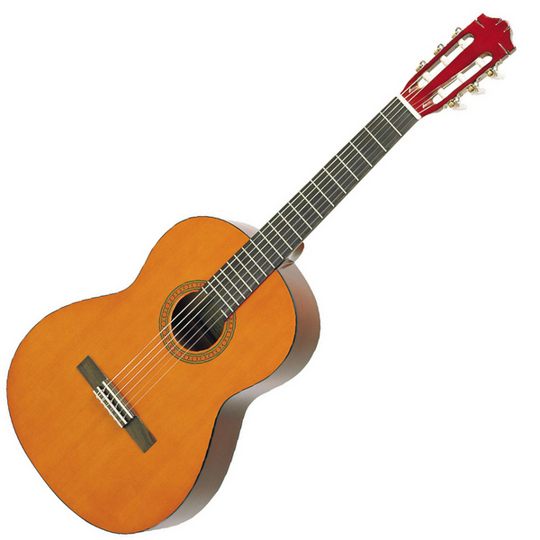
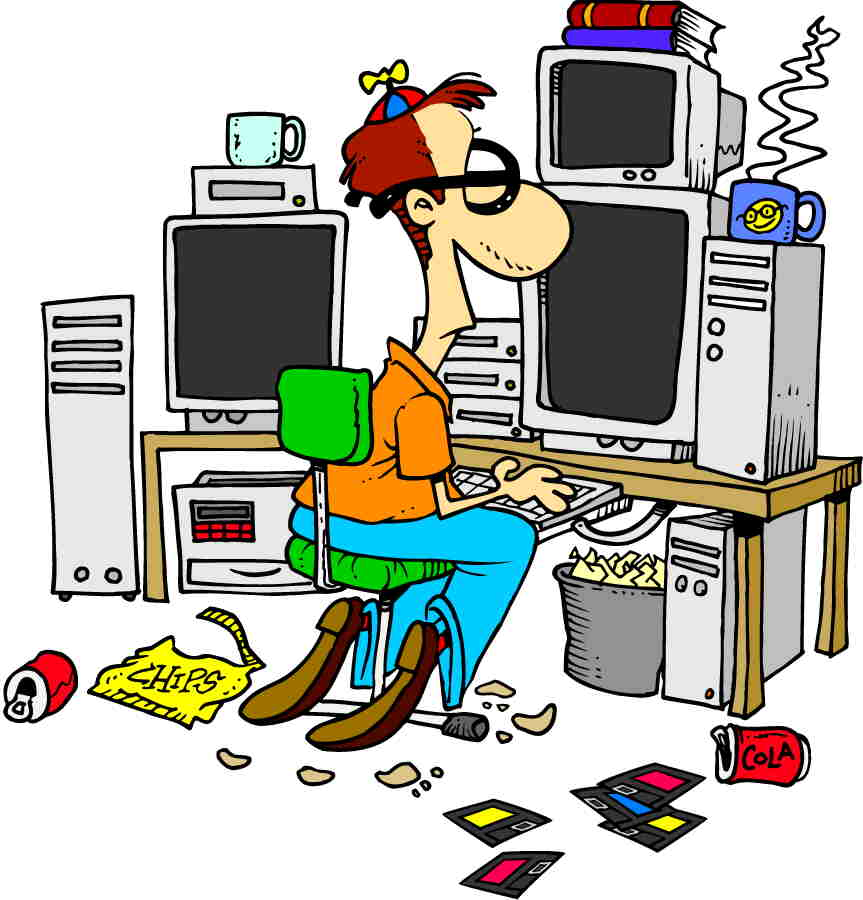
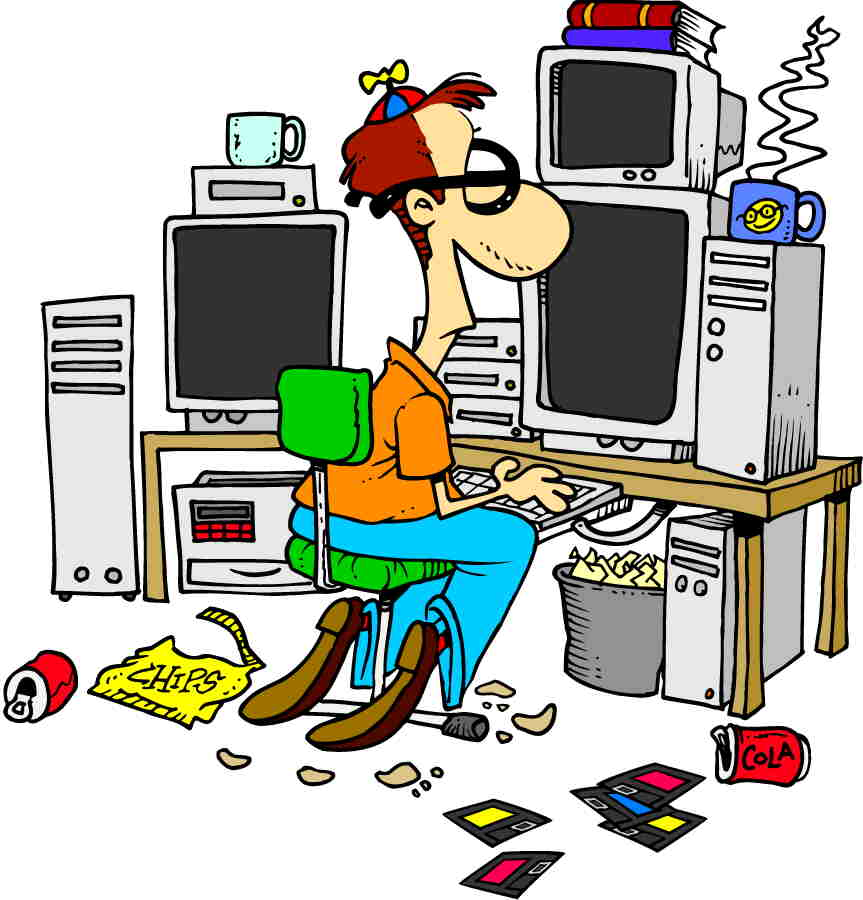

Livshistorie
1972 - nu
Min opvækst og ungdom har været træls;
og det har rakt langt langt ind i mit voksne liv.
Nu er det nævnt. Med mindre det har direkte indflydelse på fortællingen, vil jeg ellers tillade mig at forbigå det i tavshed.
Nu er det nævnt. Med mindre det har direkte indflydelse på fortællingen, vil jeg ellers tillade mig at forbigå det i tavshed.
Barndom - fantasifuld og gammelklog

Jeg har altid haft en livlig fantasi:
Som helt lille hed en af mine bamser
netop "Livlig Fantasi".
Jeg havde også to usynlige legekammerater,
som hed "Finn og Kinn".
Fra helt lille var jeg hooked på musik; noget af det første, jeg kan huske tydeligt fra min tidlige barndom, er oplevelser omkring musik.
Efter, jeg lærte at læse, var bibliotekets skønlitteraturafdeling min bedste ven.
På den anden side har jeg altid været en nørd: Nysgerrig, irriterende og gammelklog.
Jeg ping-pongede hellere med læreren, end jeg gad mine klassekammerater.
Det virkede derfor umiddelbart indlysende - for mig selv såvel som for andre - at jeg skulle studere noget mekanisk/naturvidenskabeligt. Noget som kunne forstås ud i alle kanter og detaljer.
Fra helt lille var jeg hooked på musik; noget af det første, jeg kan huske tydeligt fra min tidlige barndom, er oplevelser omkring musik.
Efter, jeg lærte at læse, var bibliotekets skønlitteraturafdeling min bedste ven.
På den anden side har jeg altid været en nørd: Nysgerrig, irriterende og gammelklog.
Jeg ping-pongede hellere med læreren, end jeg gad mine klassekammerater.
Det virkede derfor umiddelbart indlysende - for mig selv såvel som for andre - at jeg skulle studere noget mekanisk/naturvidenskabeligt. Noget som kunne forstås ud i alle kanter og detaljer.
Tidlig ungdom - retningsløs
I første omgang gik jeg på matematisk gymnasium,
det gik nogenlunde - på trods af, at jeg stort set ikke lavede lektier.
Mit yndlingsfag på gym var kemi (på grund af min fantastiske kemilærer, Tom Sillesen!), så jeg troede, at jeg skulle læse datakemi på uni. Men efter at have studeret i cirka 20 dage (hvoraf jeg kun dukkede op til halvdelen af forelæsninger og et par af lab-timerne), begravede jeg mig i stedet i science fiction og fantasy-bøger. Jeg plejer at sige, at jeg pløjede igennem alt af den type bøger, på Århus Hovedbib, i løbet af det semester, jeg "læste på uni".
Efterhånden drejede min litteratursmag sig over mod det mere eksistentialistiske: Arthur C. Clarke's senere værker, Michael Ende, Ursula K. LeGuinn, Doris Lessing, Inge Eriksen og Erwin Neutzsky-Wulff.
Jeg programmerede også flere "biblioteker" til optimeret håndtering af hardware under DOS i Turbo Pascal. Jeg fordybede mig i assembler og skrev erstatninger for device drivere; de fyldte kun en brøkdel af originalerne. Alt sammen for min egen fornøjelses skyld.
Jeg gik helst ikke udenfor en dør. Den gamle dame, jeg boede ved, syntes - med rette - at jeg var underlig.
Efter modstræbende at have indrømmet min situation for mine forældre, flyttede jeg væk fra Århus igen og havde nogle småjobs.
Så var jeg 8 måneder på Silkeborg Højskole, og det var en fantastisk oplevelse, og noget som jeg siden har trukket meget på - men lige dengang kunne jeg ikke helt relatere det til noget, det var ligesom for anderledes i forhold til dét, jeg havde forestillet mig om mit liv. Det blev nærmest en tænkepause.
Jeg startede på datamatiker (handelsskole) uden at have lært af mine fejltagelser, og lavede igen aldrig lektier. Jeg fløj igennem første semester, men måtte bruge tre forsøg på andet semester - blot for at droppe ud i starten af tredie.
Mit yndlingsfag på gym var kemi (på grund af min fantastiske kemilærer, Tom Sillesen!), så jeg troede, at jeg skulle læse datakemi på uni. Men efter at have studeret i cirka 20 dage (hvoraf jeg kun dukkede op til halvdelen af forelæsninger og et par af lab-timerne), begravede jeg mig i stedet i science fiction og fantasy-bøger. Jeg plejer at sige, at jeg pløjede igennem alt af den type bøger, på Århus Hovedbib, i løbet af det semester, jeg "læste på uni".
Efterhånden drejede min litteratursmag sig over mod det mere eksistentialistiske: Arthur C. Clarke's senere værker, Michael Ende, Ursula K. LeGuinn, Doris Lessing, Inge Eriksen og Erwin Neutzsky-Wulff.
Jeg programmerede også flere "biblioteker" til optimeret håndtering af hardware under DOS i Turbo Pascal. Jeg fordybede mig i assembler og skrev erstatninger for device drivere; de fyldte kun en brøkdel af originalerne. Alt sammen for min egen fornøjelses skyld.
Jeg gik helst ikke udenfor en dør. Den gamle dame, jeg boede ved, syntes - med rette - at jeg var underlig.
Efter modstræbende at have indrømmet min situation for mine forældre, flyttede jeg væk fra Århus igen og havde nogle småjobs.
Så var jeg 8 måneder på Silkeborg Højskole, og det var en fantastisk oplevelse, og noget som jeg siden har trukket meget på - men lige dengang kunne jeg ikke helt relatere det til noget, det var ligesom for anderledes i forhold til dét, jeg havde forestillet mig om mit liv. Det blev nærmest en tænkepause.
Jeg startede på datamatiker (handelsskole) uden at have lært af mine fejltagelser, og lavede igen aldrig lektier. Jeg fløj igennem første semester, men måtte bruge tre forsøg på andet semester - blot for at droppe ud i starten af tredie.
Sen ungdom - nu med retning
En ven rådede mig til at starte på en mere håndværksagtig uddannelse på teknisk skole,
og via elektronikmekaniker havnede jeg (som en af de første) på datamekaniker.
Her følte jeg mig hjemme, fik gode karakterer, og følte min fremtid var afklaret.
Det var også i denne periode, jeg mødte min kone, og i det hele taget kørte tingene stort set på skinner for mig.
 Efter de 5 års uddannelse blev jeg ansat i Procesdata afdelingen på Grundfos og nød det i fulde drag; jeg følte, at jeg hørte til. Denne følelse blev brat smadret, da jeg blev fyret efter 3 år, og jeg røg ned i kulkælderen.
Officielt var vi flere, der blev sagt op samtidig, på grund af besparelser. Uofficielt kunne min chef ikke lide mig (om omvendt), og jeg havde været så dum at være blandet ind i nogle projekter, der gav underskud.
Jeg hader at gå ledig. Jeg går fuldstændig i baglås over selvbebrejdelser og dage, der bare forsvinder.
Men efter nogle måneder så jeg et stillingsopslag, som i den grad tændte mig. Det drejede sig om et lille musikfirma i Hasselager, der skulle bruge en projektmedarbejder i 2 måneder. Det viste sig, at jeg swingede perfekt med deres chefprogrammør, og måske fordi jeg ikke krævede noget særligt i løn, fik jeg jobbet. Min ansættelse blev forlænget af flere omgange. Det var et fantastisk job! Og jeg nød det i fulde drag.
Uheldigvis gik det ikke i længden, vi fik aldrig overskud, min chef begyndte at tage tvivlsomme beslutninger, og til sidst trak pengemanden tæppet væk under os.
Det var også i denne periode, jeg mødte min kone, og i det hele taget kørte tingene stort set på skinner for mig.
 Efter de 5 års uddannelse blev jeg ansat i Procesdata afdelingen på Grundfos og nød det i fulde drag; jeg følte, at jeg hørte til. Denne følelse blev brat smadret, da jeg blev fyret efter 3 år, og jeg røg ned i kulkælderen.
Officielt var vi flere, der blev sagt op samtidig, på grund af besparelser. Uofficielt kunne min chef ikke lide mig (om omvendt), og jeg havde været så dum at være blandet ind i nogle projekter, der gav underskud.
Jeg hader at gå ledig. Jeg går fuldstændig i baglås over selvbebrejdelser og dage, der bare forsvinder.
Men efter nogle måneder så jeg et stillingsopslag, som i den grad tændte mig. Det drejede sig om et lille musikfirma i Hasselager, der skulle bruge en projektmedarbejder i 2 måneder. Det viste sig, at jeg swingede perfekt med deres chefprogrammør, og måske fordi jeg ikke krævede noget særligt i løn, fik jeg jobbet. Min ansættelse blev forlænget af flere omgange. Det var et fantastisk job! Og jeg nød det i fulde drag.
Uheldigvis gik det ikke i længden, vi fik aldrig overskud, min chef begyndte at tage tvivlsomme beslutninger, og til sidst trak pengemanden tæppet væk under os.
Voksen - og følsom
Så stod jeg der igen med håret i postkassen.
Uheldigvis havde det sidste job efterladt mig i en arkitektonisk blindgyde, fordi musikfirmaet - for at kunne operere på både Mac og Windows platformen - baserede softwaren på rå C++ i stedet for C# og andre fancy nyskabelser.
Alle jobannoncer krævede erfaring indenfor C# og .NET - og det kunne jeg ikke få mig selv til at skrive, at jeg havde. Uanset, at jeg synes, at når man kan ét sprog (eller, i mit tilfælde, 10 sprog), så er nye sprog bare mere af det samme. Dét er svært at forklare til potentielle chefer og HR-konsulenter; de vil helst se papir på, at man kan tingene. Som om man kan bruge papirer til at programmere med; det har jeg aldrig forstået.
 Hvorom alt er: Efter at have gået arbejdsløs længe nok, skulle jeg sendes ud i
noget; og jeg lod mig overtale af jobcenteret
til at prøve 4 uger ved hjemmeplejen i Favrskov.
Hvorom alt er: Efter at have gået arbejdsløs længe nok, skulle jeg sendes ud i
noget; og jeg lod mig overtale af jobcenteret
til at prøve 4 uger ved hjemmeplejen i Favrskov.
Allerede efter den første dag kunne jeg - til min overraskelse - slet ikke få armene ned igen af begejstring! Det var så fedt. At endelig lave noget meningsfyldt; særlig efter at jeg i min sidste ansættelse havde brændt så meget blod, sved og timer af på hovedløse projekter, der aldrig blev til noget.
Jeg snakkede med de ansatte om muligheden for at blive SOSU, og fik at vide, at lønnen var til at grine af. Det var så, hvad det var.
Men det store problem for mig var arbejdstiderne. Weekend-vagterne hos hjemmeplejen kunne jeg nok leve med; men det er næsten umuligt at blive kørende hjemmeplejer i dagtimerne, meget nemmere at få aftenruter - eller at komme ind på et plejehjem, hvor der er døgnbemanding.
Med tungt hjerte valgte jeg det fra.
 Efter lang tid (og en hulens masse IT ansøgninger, som svarene blev mere og mere
sporadiske på) kom jeg et par sommerferieuger ind
som vikar i en SFO.
Og igen: Armene i vejret!
Det er så fedt at arbejde med mennesker, også de små af slagsen :)
Jeg elskede de møgunger! Særlig de bøwlede.
Efter lang tid (og en hulens masse IT ansøgninger, som svarene blev mere og mere
sporadiske på) kom jeg et par sommerferieuger ind
som vikar i en SFO.
Og igen: Armene i vejret!
Det er så fedt at arbejde med mennesker, også de små af slagsen :)
Jeg elskede de møgunger! Særlig de bøwlede.
Først blev jeg ansat indtil Jul, og siden forlænget to gange; men pga ansættelsesstop kunne jeg ikke få lov at blive efter juli 2012; øv.
Siden har min stress fra sidste IT-ansættelse desværre ramt mig hårdt i nakken, og jeg er stadig ikke i job.
Uheldigvis havde det sidste job efterladt mig i en arkitektonisk blindgyde, fordi musikfirmaet - for at kunne operere på både Mac og Windows platformen - baserede softwaren på rå C++ i stedet for C# og andre fancy nyskabelser.
Alle jobannoncer krævede erfaring indenfor C# og .NET - og det kunne jeg ikke få mig selv til at skrive, at jeg havde. Uanset, at jeg synes, at når man kan ét sprog (eller, i mit tilfælde, 10 sprog), så er nye sprog bare mere af det samme. Dét er svært at forklare til potentielle chefer og HR-konsulenter; de vil helst se papir på, at man kan tingene. Som om man kan bruge papirer til at programmere med; det har jeg aldrig forstået.
Hvorom alt er: Efter at have gået arbejdsløs længe nok, skulle jeg sendes ud i
noget; og jeg lod mig overtale af jobcenteret
til at prøve 4 uger ved hjemmeplejen i Favrskov.Allerede efter den første dag kunne jeg - til min overraskelse - slet ikke få armene ned igen af begejstring! Det var så fedt. At endelig lave noget meningsfyldt; særlig efter at jeg i min sidste ansættelse havde brændt så meget blod, sved og timer af på hovedløse projekter, der aldrig blev til noget.
Jeg snakkede med de ansatte om muligheden for at blive SOSU, og fik at vide, at lønnen var til at grine af. Det var så, hvad det var.
Men det store problem for mig var arbejdstiderne. Weekend-vagterne hos hjemmeplejen kunne jeg nok leve med; men det er næsten umuligt at blive kørende hjemmeplejer i dagtimerne, meget nemmere at få aftenruter - eller at komme ind på et plejehjem, hvor der er døgnbemanding.
Med tungt hjerte valgte jeg det fra.
Efter lang tid (og en hulens masse IT ansøgninger, som svarene blev mere og mere
sporadiske på) kom jeg et par sommerferieuger ind
som vikar i en SFO.
Og igen: Armene i vejret!
Det er så fedt at arbejde med mennesker, også de små af slagsen :)
Jeg elskede de møgunger! Særlig de bøwlede.Først blev jeg ansat indtil Jul, og siden forlænget to gange; men pga ansættelsesstop kunne jeg ikke få lov at blive efter juli 2012; øv.
Siden har min stress fra sidste IT-ansættelse desværre ramt mig hårdt i nakken, og jeg er stadig ikke i job.
2015-09-16